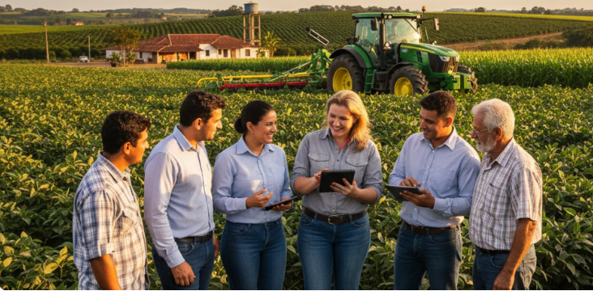

Sobre a SilveAgro
SilveAgro é uma empresa especializada em assistência técnica e consultoria nas áreas de agricultura e pecuária, formada por profissionais capacitados e comprometidos em oferecer soluções eficientes para o desenvolvimento do agronegócio.
Nossa missão é proporcionar orientação técnica de qualidade aos produtores rurais, auxiliando no planejamento e manejo das atividades agropecuárias.
- Avicultura
- Suinocultura
- Bovinocultura
- Caprinocultura
- Ovinocultura
- Piscicultura
- Manejo do solo
Acreditamos que o conhecimento técnico, aliado à experiência profissional, é fundamental para melhorar a produtividade e fortalecer o agronegócio.